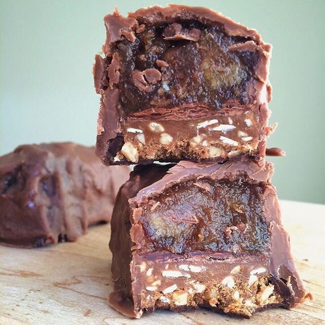

4-Ingredient Healthy Snickers (vegan, gluten free)
YOOO Square Bars just came out with a Peanut Butter bar and it's freakin amazing. Reminds me of a snickers missing the caramel so I MADE ONE WITH IT. So killerrrrrr. It's easy, needs only 4 ingredients, and it's a healthy snickers! Vegan and gluten free :D The cocoa coconut bar has always been my favorite flavor in the past, but this surpasses all of the other 5 flavors for sure!!
So let's talk about my website(s). I don't know if you noticed, but stuff's been happening. In a bad way, haha. I'm just gonna admit that web programming/coding is not my best skill. In the past, my ex did my site management. But now, it's just me. I've been doing some work on my business site, and I inadvertently crashed both sites at the same time. It's pretty embarrassing...but it happens. I had a major breakdown the other day when I reached what felt like a dead-end. I'm definitely learning a lot in the process, but by no means is it fun. Mostly because a BUSINESS is at stake and it's not okay to be out-of-service for 4-5 days at a time.
So um. Yeah. If anything weird happens with the site, thank you for being super patient until I get it back up and running. There are still some weird things going on with my blog, but I think the business is okay now. If you notice anything being weird, I really do appreciate you bringing it to my attention. And thanks for understanding while I meep along D;
In stressful times like this, grab a healthy snickers! lolol see what I did there. I hope so. I crack myself up. Maybe I'm just going insane.

4-Ingredient Healthy Snickers
Makes: 2 bars
-
1 Chocolate Peanut Butter Square Bar
-
1/4 cup pitted dates (40 g)
-
2-3 TBSP hot water
-
1/4 tsp vanilla extract
-
pinch of sea salt
-
1 oz chocolate chips (I used Enjoy Life vegan chips)
1. Cut the Square Bar into 2 pieces. These serve as the base of the snickers bars.
2. Mash the pitted dates with 2 TBSP hot water until smooth and creamy (if your dates are not soft to begin with, soak them for 3-4 hours in water to soften). Then add the vanilla extract and sea salt to the mashed dates. Mix until even to make a caramel.
3. Place half of the date caramel on top of each Square Bar half, completely covering the tops.
4. Melt the chocolate in the microwave for 30-60 seconds, then use to completely coat the two bars. Place in the refrigerator for an hour, or until the chocolate solidifies. Enjoy!